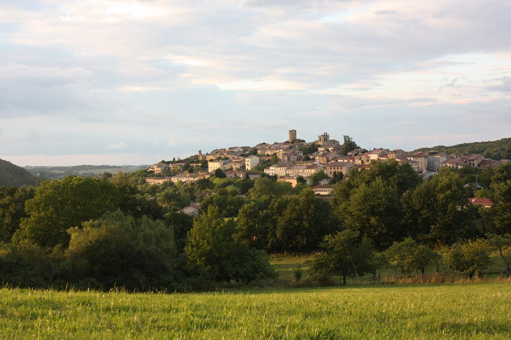

프랑스 오리냐크 마을, 시민 재생에너지 협동조합 추진…10월 28일 주민설명회

마을·제3의 공간 라 글리사드·오크시타니 시민에너지 네트워크 ECLR과 주민이 함께 태양광 발전 사업 준비
프랑스 오트가론주 코맹주 지역의 오리냐크(Aurignac) 마을이 시민 재생에너지 협동조합을 만들어 태양광 발전 사업을 하는 방안을 추진하면서, 10월 28일 저녁 6시 생미셸 공간(espace Saint-Michel)에서 주민설명회를 열 예정이다. 사업은 오리냐크 마을과 제3의 공간 '라 글리사드(la Glissade)', 시민·협동조합형 재생에너지 사업을 돕는 오크시타니 지역 네트워크 ECLR, 그리고 참여하려는 시민들이 함께 꾸려 가고 있다. 설명회에서는 시민 협동조합이 무엇인지와 사업의 내용을 설명하고 ECLR 관계자들이 경험을 들려줄 계획이다. 이어 밤에는 1990년대 석유 공급이 끊긴 쿠바가 어떻게 버텼는지를 다룬 다큐멘터리를 함께 본다.
시민에너지 관점
설비 용량도 부지도 정해지기 전에 마을과 주민, 지역 네트워크가 먼저 한자리에 모인다는 것은 시민 발전소가 설비보다 사람을 모으는 데서 시작한다는 점을 보여 준다. 작은 마을이 법률과 금융 문제를 혼자 풀 수 있겠느냐는 걱정이 있겠지만, 프랑스에는 시민 출자 재생에너지 사업을 묶고 돕는 전국 운동체 에네르지 파르타제(Énergie Partagée)와 ECLR 같은 지역 네트워크가 있어 마을이 처음부터 혼자 헤매지 않는다. 국내 햇빛소득마을도 마을마다 따로 길을 찾지 않도록, 설명회부터 출자·운영까지 이끌어 줄 지역 단위 중간지원 조직부터 갖춰야 한다.
출처: 프티트 레퓌블리크(Petite République) 2026-10-25 실비 니콜라(Sylvie Nicola) 원문 보기
仏オリニャック村、市民再エネ協同組合を推進…10月28日に住民説明会
村とサードプレイス「ラ・グリサード」、オクシタニーの市民エネルギーネットワークECLR、住民が共に太陽光発電事業を準備
フランス・オートガロンヌ県コマンジュ地方のオリニャック（Aurignac）村が、市民による再生可能エネルギー協同組合をつくって太陽光発電事業を行う計画を進めており、10月28日午後6時からサン・ミシェル会館（espace Saint-Michel）で住民説明会を開く予定だ。事業はオリニャック村とサードプレイス「ラ・グリサード（la Glissade）」、市民・協同組合型の再エネ事業を支援するオクシタニー地方のネットワークECLR、そして参加を希望する市民が共に進めている。説明会では市民協同組合とは何か、事業の中身を説明し、ECLRの関係者が経験を語る予定だ。続いて夜には、1990年代に石油の供給が途絶えたキューバがどう乗り切ったかを描いたドキュメンタリーを上映する。
市民エネルギーの視点
設備容量も用地も決まる前に、村と住民、地域ネットワークがまず一堂に会することは、市民発電所が設備よりも人を集めることから始まることを示している。小さな村が法律や資金の問題を独力で解決できるのかという懸念もあるだろうが、フランスには市民出資の再エネ事業を束ねて支える全国組織エネルジー・パルタジェ（Énergie Partagée）やECLRのような地域ネットワークがあり、村が最初から一人で迷うことはない。韓国の太陽光所得村も村ごとにばらばらに道を探さずに済むよう、説明会から出資・運営まで導く地域単位の中間支援組織をまず整えるべきだ。
出典: プティット・レピュブリック（Petite République） 2026-10-25 シルヴィ・ニコラ（Sylvie Nicola） 原文を読む
法国奥里尼亚克村推进市民可再生能源合作社…10月28日举行居民说明会
村政府、第三空间La Glissade、奥克西塔尼市民能源网络ECLR与居民共同筹备太阳能发电项目
法国上加龙省科曼日地区的奥里尼亚克（Aurignac）村正在推进组建市民可再生能源合作社、开展太阳能发电项目的计划，将于10月28日晚6时在圣米歇尔活动中心（espace Saint-Michel）举行居民说明会。项目由奥里尼亚克村政府、第三空间“La Glissade”、支持市民和合作社型可再生能源项目的奥克西塔尼地区网络ECLR，以及愿意参与的市民共同推进。说明会将介绍市民合作社的概念和项目内容，ECLR的代表也将分享经验。当晚随后还将放映一部纪录片，讲述1990年代石油供应中断后古巴如何挺过难关。
市民能源视角
在装机容量和场址都还没有确定之前，村政府、居民和地区网络就先坐到一起，这说明市民电站是从聚集人而不是从设备开始的。有人会担心小村庄能否独自解决法律和融资问题，但法国有把市民出资可再生能源项目联合起来并提供支持的全国性运动组织Énergie Partagée，还有ECLR这样的地区网络，村庄从一开始就不必独自摸索。韩国的阳光收入村也应首先建立地区层面的中间支持组织，从说明会到出资和运营一路带领，免得各村各自摸索。
来源: Petite République 2026-10-25 Sylvie Nicola 查看原文
French village of Aurignac moves toward a citizens' renewable energy cooperative, with a public meeting on October 28
The village, the La Glissade third place, the Occitanie citizen energy network ECLR and residents are preparing a solar power project together
The village of Aurignac in the Comminges area of France's Haute-Garonne department is working toward a citizens' renewable energy cooperative to run a solar power project, and will hold a public meeting at the espace Saint-Michel at 6pm on October 28. The project is being shaped jointly by the municipality, the third place La Glissade, ECLR, a regional network in Occitanie that supports citizen and cooperative renewable projects, and residents who wish to take part. The meeting will explain what a citizens' cooperative is and what the project involves, and ECLR representatives will share their experience. Later that evening, a documentary on how Cuba coped when its oil supply was cut off in the 1990s will be screened.
Citizen Energy View
That the village, its residents and a regional network are meeting before any capacity or site has been chosen shows that a citizen power plant starts with gathering people, not equipment. Some may worry whether a small village can handle the legal and financial questions alone, but France has Énergie Partagée, a national movement that brings together and supports citizen-financed renewable projects, as well as regional networks such as ECLR, so villages do not have to find their way alone. So that each of Korea's Sunlight Income Villages does not have to work things out by itself, regional intermediary support bodies that guide villages from the first meeting through investment and operation should come first.
Source: Petite République 2026-10-25 Sylvie Nicola Read the original